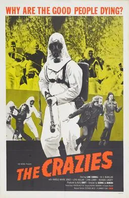

The genetics
The threat is a man-made bioweapon. Trixie, a virus developed by the US military, is released when an Army plane crashes, and spreads madness and death through a small town. One of its creators, Dr. Watts, is sent to contain the outbreak and finds a possible cure, but it is lost when he is killed in a stampede, a bitter irony in a film where the military response is as deadly as the virus itself: soldiers round up and shoot civilians, and nuclear bombers circle overhead. George A. Romero's film is concerned with the military takeover and the townspeople's struggle to survive rather than with biology, and the virus is never described in genetic detail. It ends pessimistically, with the cure destroyed and the virus spreading to another city.
How genetics is portrayed
- Overall portrayal of genetics
- negative Military bioweapon science causes the disaster and the film ends on a bleak, ominous note.
- Outcome of the genetic intervention
- negative The bioweapon kills or maddens much of the town, the cure is destroyed and the virus spreads to Louisville.
- US Army biological weapons programme
- villain Aim: military (negative). The military developed the Trixie virus as a weapon; after its accidental release it imposes martial law, shoots civilians and prepares to bomb the town, and the film presents it as a brutal, secretive authority.
- Dr. Watts
- ambivalent Aim: military, benevolent (mixed). A scientist who helped create the bioweapon, he is sent to contain it and develops a possible cure, but he dies in the chaos and the cure is lost; the film shows him as part of the problem trying to fix it.
The story
In Evans City, Pennsylvania, a farmer kills his wife and burns down his house. Days earlier, an Army plane carrying a biological weapon, a virus code-named Trixie, crashed near the town and contaminated the water supply; the virus either kills its victims or makes them homicidally insane. Troops under Major Ryder take over the town, declare martial law, round up residents at gunpoint and shoot those who try to escape, while bombers with nuclear weapons stand ready to destroy it. Colonel Peckem and Dr. Watts, a scientist who helped create the virus, arrive to contain the outbreak and find a cure. Firefighters David and Clank, David's pregnant girlfriend Judy, a nurse, and a teenager and her father try to escape through the woods; one by one they die, killed by soldiers, civilians or the effects of the virus. David survives and realises he is immune, but keeps it secret. Watts finds a possible cure, but he is killed and the samples destroyed, and the virus appears in Louisville.